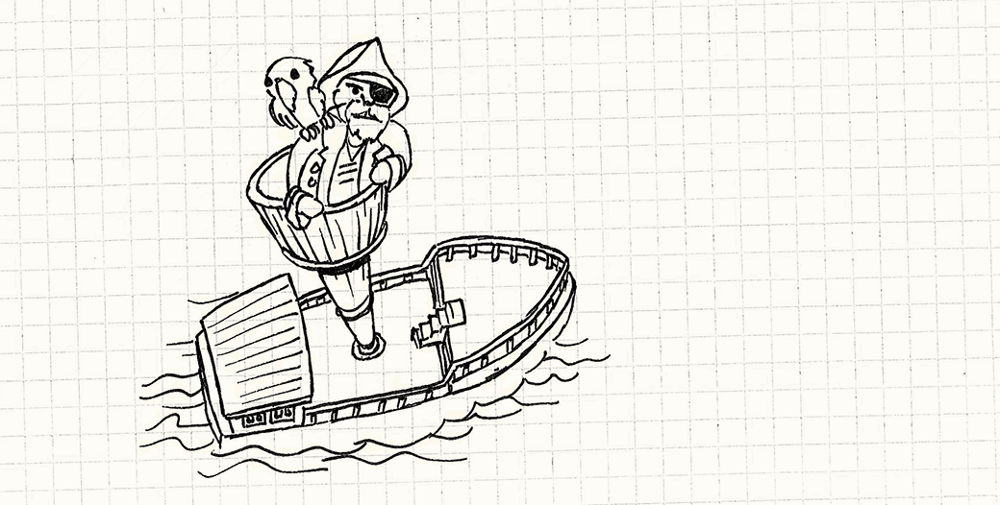
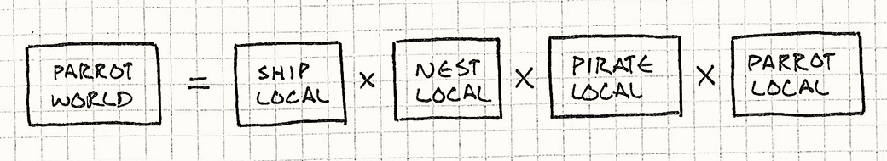
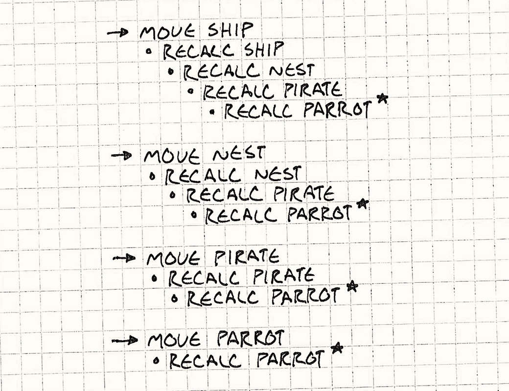
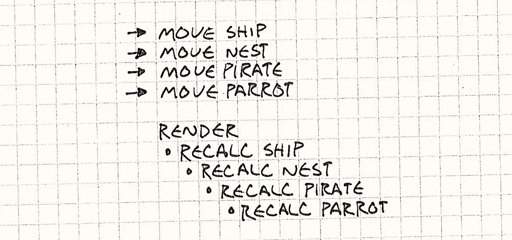
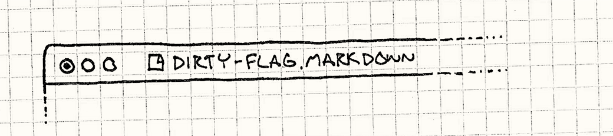

Грязный флаг
Game Programming PatternsНизкоуровневая оптимизация
Общая мысль
Избегайте ненужной работы. Когда понадобиться — тогда и выполните.
Предыстория
“Флаг” и “бит” являются практически синонимами в программировании: они оба могут находится только в оодном и двух состояний. Можно назвать их “правда” или “ложь”, иногда “установлен” и “очищен”. Я буду использовать оба варианта. Так что текущую главу можно было назвать “Грязный бит”, но я решил использовать более нейтральный вариант.
Как найти лодку в море
Множество игр занимаются построение графа сцены. Это такая большая структура, в которой находятся все объекты игры. Рендерер использует его, чтобы определить что где рисовать.
В простом случае, граф — это плоский список объектов. У каждого объекта есть модель или другой графический примитив, и матрицу трансформации. Трансформация описывает координаты объекта, поворот и масштабирование. Чтобы передвинуть или повернуть объект, мы просто меняем его трансформацию.
Когда рендерер рисует объект, он берет модель объекта, накладывает на него транформацию, и затем рисует эту модель. И если не вспоминать про граф сцены, то на этом все заканчивается и жизнь становится проста, как два пальца.
К сожалению, большинство графов будут иметь иерарархию. У объекта в графе есть родитель, к котором он прикреплен. В этом случае, на трансформацию объекта надо ещё наложить трансформацию родителя, чтобы получить правильные координаты при рисовании.
Допустим, мы рисуем пиратский корабль в море. Пусть на верху мачты есть бочка, в ней сидит пират, и на плече у него — попугай. Трансформация корабля описывает его положение в море. Трансформация бочки описывает её положение на корабле, и так далее.

Когда родительский объект двигается, автоматически двигаются и все его дети. И если мы поменяем локальную трансформацию корабля, то бочка, старый пират и попугай должны передвинуться вместе с ним. И было бы глупо, если бы мы вручную меняли трансформации всех объектов, которые находятся на корабле, чтобы ничего не разъехалось.
Но когда мы непосредственно приступили к рисованию попугая, нам нужны его абсолютные координаты. Будем называть локальной трансформацией трансформацию относительно родительского объекта. А для того чтобы рисовать, будем вычислять абсолютную, или мировую трансформацию.
Локальная и мировая трансформация
Сделать это несложно: надо подниматься по цепочке родителей вверх до самого конца, а затем спускаться обратно, накладывая трансформации друг на друга поочередно. Тогда мировая трансформация попугая будет:

Нам нужна эта мировая трансформация каждую отрисовку, так что операции с матрицами могут стать занозой в заднице. Поддерживать их в актуальном состоянии непросто, потому что когда родительский объект двигается, это влияет и на него, и на всех его детей рекурсивно.
Очевидный вариант — это вычислять трансформации прямо при рисовании. Каждую отрисовку мы будем спускаться по графу, начиная с самого верха, и вычислять мировую трансформацию для каждого объекта. А потом рисовать его.
Этот вариант ужасен до невозможности. На практике, большинство объектов не передвигаются — вспомните про статические объекты, из которых состоит уровень. Нет необходимости делать лишнюю работу и вычислять их координаты каждый раз.
Используем кэш
Очевидный подход — кэшировать трансформации. В каждом объекте мы будем хранить локальную и мировую трансформацию. При отрисовке мы используем мировую трансформацию, которая уже вычислена. И если объект не двигается, то она всегда актуальна — и все довольны.
Что делать, если объект передвинули? Можно сразу же пересчитать мировую трансофрмацию. Только у нас же иерархия! Когда двигается родитель, нужно пересчитать его трансформацию и всех его детей, рекурсивно.
Представьте, что у нас довольно сложная игра. В каждом цикле корабль толкают волны, бочка раскачивается на ветру, пирата постоянно тошнит, а попугай прыгает через голову. И тут мы меняем четыре локальных трансформации. Если мы сразу же начнем пересчитывать мировые, то во что это выльется?

Мы всего лишь передвинули четыре объекта, а пришлось пересчитать десять мировых трансформаций. Шесть бесполезных вычислений будут выкинуты, потому что их результат нам не интересен. Мы четыре раза пересчитали попугая, хотя он был нарисован всего один раз.
Проблемы в том, что мировая трансформация зависит от нескольких локальных. Мы начинали перерасчет сразу после того, как изменилась хотя бы одна из них. В результат пришлось пересчитать мировую трансформацию для одного и того же объекта столько раз, сколько локальных трансформаций родителей изменилось.
Отложенные вычисления
Мы можем решить эту проблему, если разделим обновление локальной и мировой трансформации. Это позволит изменять набор локальных трансформаций одних махом, и затем пересчитать те мировые трансформации, которые это затронуло, прямо перед отрисовкой.
Мы добавим флажок к каждому объекту в графе. Когда будет менятся локальная трансформация, мы его выставим. И когда нам понадобиться мировая, мы будем проверять этот флаг. Если он выставлен, то мы пересчитаем мировую трансформацию и очистим флаг. Этот флаг как бы говорит нам “нужно обновлять матрицы?” По причинам, которые не совсем ясны, обычное название для таких “уже неточных” данных — это “грязные” (dirty). Вот и получился грязный флаг.
Если мы применим этот подход, и повторим пример с четырьмя объектами, то в результате увидим:

Это лучшее, на что можно было бы надется: мировая трансформация для каждого тронутого объекта вычисляется только один раз. С помощью одного бита, это паттерн сделал несколько вещей:
- Множество изменений локальных трансформаций он превратил в одно вычисление для каждого объекта.
- Избавляет от необходимости пересчитывать статические объекты.
- И мини-бонус: если объект удалили до того, как он был нарисован, то у него ничего не вычисляется вообще.
Общий подход
Есть набор основных данных, который меняется постоянно. И есть вторичные данные, которые вычисляются из основных с помощью некоторого дорогого процесса. Грязный флаг обозначает актуальность вторичных данных и их соответствие основным. Когда запрашиваются вторичные данные — проверяется флаг. Если флаг поднят, необходимо рассчитать вторичные данные заново и очистить флаг. Если опущен — можно использовать закэшированные вторичные данные, рассчитаные ранее.
Когда это использовать
По сравнению с другими паттернами в этой книге, этот решает довольно специфическую задачу. Нужно понимать, что любая борьба за производительность выливается в усложнение кода. Так что проблема должна быть достаточно большой, чтобы компенсировать выросшую сложность.
“Грязный флаг” применим к двум процессам: вычисления и синхронизация. В обоих случаях, процесс перевод первичных данных во вторичные выполняется долго или дорог по другим причинам .
В нашем примере с графом сцены вычисления медленные, потому что там много математики. При задаче синхронизации проблема чаще заключается в том, что вторичные данные находятся где-то далеко — на диске или в сети на другой машине — и дорога сама доставка данных из пункта A в пункт B.
Вот ещё пара требований:
-
Первичные данные изменяются чаще, чем ипользуются вторичные. Паттерн работает за счет избегания работы с вторичными данными до того как они понадобятся, если изменились первичные. Если есть жесткая необходимость обновить вторичные данные сразу же после изменения основных — этот паттерн не для вас.
-
Трудно реализовать инкрементальное обновление. Допустим, наш пиратский корабль может только возить товары. И нам нужно знать вес груза в трюмах. Мы можем использовать этот паттерн и указать флагом на общий вес. Каждый раз, когда мы добавляем или убираем сундук, мы поднимаем флажок. Когда нам нужен общий вес, мы складываем все сундуки вместе и опускаем флаг.
Есть решение проще — просто обновлять сумму. Когда мы добавляем или убираем вес, можно просто прибавлять или вычитать это число из общего веса. Если мы можем пренебречь затратами на подобную работу, и при этом поддержать актуальность первичных данных, то это выгодное решение.
Из всего этого кажется, что техникой грязного флага тяжело воспользоваться. Но можно найти место, где её применить. Если поискать слово “dirty” в коде игры средней сложности, то подобные примеры легко найдутся.
Особенности
Даже если вы решились на использование этого паттерна, надо быть готовым к моментам, который доставят некоторый дискомфорт.
Затраты на чрезмерно отложенные вычисления
Мы откладываем затратные вычисления до момента, когда результаты действительно понадобятся. А когда они становяться нужными, они нужны практически сразу. Но ведь из-за этого всё и завертелось — потому что вычисления медленные!
В нашем примере, это не проблема, потому что перевод локальной трансформации в мировую быстр достаточно, чтобы не задерживать отрисовку. Однако, легко представить другие ситуации, когда вычисления вызовут паузу, заметную невооруженным взглядом. И если игрок не получит результат этих вычислений сразу же, это будет весьма неприятная пауза.
Ещё одна трудность — если что-то пойдет не так в процессе вычислений, то восстановиться после такой ошибки тяжело. В случае, если вы используете отложенные вычисления, чтобы сохранить состояние куда-нибудь, то это может добавить головной боли.
Например, текстовые редакторы не сразу сохраняют файл на диск. Как правило, маленькая звездочка в заголовке окна наглядно показывает “грязный флаг”. Здесь первичные данные — это открытый в редакторе документ, а вторичные — байты на диске.

Часть программ не сохраняют изменения на диск до тех пор, пока приложение или документ не закроются. Это нормально, но если неожиданно выдернуть питание, то шедевр не увидит своих фанатов.
Функция автоматического бэкапа в редакторах компенсирует этот недостаток. Частота автосохранения — это выбранный компромисс между “не потерять слишком много, если все накроется” и “экономить время и не утруждать винчестер лишней работой”.
Не забывайте выставлять флажок каждый раз, когда состояние изменилось
Так как вторичные данные вычисляются из основных, это практически кэш. А где появляется кэш, то там появляется и инвалидация кэша — внимательное слежение за актуальнойстью данных в кэше. В текущем паттерне, это означает своевременное выставление флажка сразу же, как что-то поменялось в основных данных.
Стоит пропустить всего одно место, и программа начнет использовать устаревшие данные. Это ведет к конфузу у игроков и трудно отслеживаемым ошибкам. Когда используете этот паттерн, убедитесь, что грязный флаг выставляется после любого изменения в первичных данных.
Одним из способов следить за этой моментом является применение интерфейса для модификаций первичных данных. Если все изменения проходят через одну и ту же точку, то можно выставлять этот флаг там и забыть об этой проблеме на долгое время.
На хранение вторичных данных требуется память
Когда вторичные данные понадобятся, и грязный флаг не поднят, то используются уже вычисленные результаты. Это очевидно, но это вынуждает хранить эти рузельтаты в памяти постоянно, так как они могут понадобиться позже.
Если бы мы не использовали грязный флаг, то просто вычисляли бы вторичные данные каждый раз, когда они понадобятся, и уничтожали сразу после использования. Это помогает избежать затрат на хранение их в памяти ценой постоянных вычислений.
Тут, как и везде, мы платим памятью за скорость. В обмен за хранение вычисленных результатов в памяти, вы получаете возможность не тратить время на повторые вычисления, если ничего не изменилось. Этот обмен имеет смысл, если вычисления дороги, а память — дешева. Если у вас времени больше, чем памяти, то выгоднее каждый раз пересчитывать.
Примеры
Давайте предположим, что у нас необычно длинный список требований, и посмотрим как наш паттерн будет смотреться в коде. Как я говорил, настоящая математика всяких матриц находится за пределами этой книги. Поэтому я спрячу всю логику в абстрактный класс, не раскрывая деталей реализации:
class Transform { public: static Transform origin(); Transform combine(const Transform& other) const; };
Единственная операция, которая нам понадобиться, это combine(). Она выдает нам мировую трансформацию, комбинируя все локальные сверху вниз. Так же есть метод origin(), который возвращает единичную матрицу, без всяких трансляций, вращений и так далее.
Теперь придумаем класс, который будет объектом в нашем графе сцены. Это самый минимум, который нам нужен перед применением паттерна:
class GraphNode { public: GraphNode(Mesh* mesh) : mesh_(mesh), local_(Transform::origin()) {} private: Transform local_; Mesh* mesh_; GraphNode* children_[MAX_CHILDREN]; int numChildren_; };
У каждой ноды есть локальная трансформация, которая описывает её положение относительно родительской. Ещё у неё есть mesh_ — это реальная графика для объекта (mesh_ может быть NULL, если это невизуальная нода, которая нужна для группировки остальных). Наконец, у каждой ноды есть список дочерних нод, возможно, пустой.
Со всем этим, граф сцены — это просто единственная корневая GraphNode, чьи дети (внуки, и так далее) являются объектами мира:
GraphNode* graph_ = new GraphNode(NULL); // Add children to root graph node...
Чтобы отрисовать граф, нам нужно пройтись по всему дереву нод, начиная с корня и вызвать следующую функцию для графики каждой ноды с правильной мировой трансформацией:
void renderMesh(Mesh* mesh, Transform transform);
Мы не будем её реализовывать. Но если бы стали, то там бы была всякая магия, связанная с рисованием меша в данной точке пространства. Если мы сможем вызвать эту функцию правильно и быстро для каждой ноды в графе — мы выполним нашу задачу.
Неоптимальный подход
Будем пачкать руки. Начнем с простого обхода, который вычисляет мировую трансформацию на лету. Это не будет оптимально, зато просто. Добавим новый метод к GraphNode:
void GraphNode::render(Transform parentWorld) { Transform world = local_.combine(parentWorld); if (mesh_) renderMesh(mesh_, world); for (int i = 0; i < numChildren_; i++) { children_[i]->render(world); } }
Будем передавать мировую трансформацию родительской ноды используя parentWorld. Тогда, чтобы получить трансофрмацию для текущей ноды, надо просто скомбинировать родительскую мировую и локальную трансформации. Не придется ползти вверх по цепи родителей, чтобы высчитать мировую трансформацию, потому что мы получаем её последовательно спускаясь сверху вниз.
Затем сохраним мировую трансофрмацию ноды в переменную world для хранения и отрисум меш, если он есть. Наконец, мы проделаем то же самое для дочерних нод, передавая туда мировую трансформацию текущей ноды. Вот и получился простой рекурсивный алгоритм.
Чтобы нарисовать всю сцену, запустим эту функцию для корневой ноды:
graph_->render(Transform::origin());
Добавим флаг
Итак, этот код делает верную штуку — рисует все объекты в правильном месте — но не совсем оптимально. Он вызывает local_.combine(parentWorld) для каждой ноды в графе, для каждого кадра. Посмотрим, как наш паттерн это изменит. Во-первых, мы добавим два поля в GraphNode:
class GraphNode { public: GraphNode(Mesh* mesh) : mesh_(mesh), local_(Transform::origin()), dirty_(true) {} // Other methods... private: Transform world_; bool dirty_; // Other fields... };
Поле world_ кэширует текущее, вычисленное значение мировой трансформации, а dirty_ — это и есть грязный флаг. Заметим, что изначально он выставлен в true. Это значит, что когда мы создаем новую ноду, её мировая трансформация ещё не рассчитана.
Единственная причина, по который нам нужен паттерн “грязный флаг”, это то, что объекты движутся. Поэтому добавим поддержку для этого:
void GraphNode::setTransform(Transform local) { local_ = local; dirty_ = true; }
Важно что здесь мы выставляем флаг в true. Что-нибудь забыли? Правильно: дочерние ноды!
Когда родительская нода двигается, все трансформации её дочерних элементов становятся невалидными. Но здесь мы не меняем их флаги. Мы могли бы это сделать, но это рекурсивно и медленно. Вместо этого мы используем другую идею в процедуре рисования. Вот смотрите:
void GraphNode::render(Transform parentWorld, bool dirty) { dirty |= dirty_; if (dirty) { world_ = local_.combine(parentWorld); dirty_ = false; } if (mesh_) renderMesh(mesh_, world_); for (int i = 0; i < numChildren_; i++) { children_[i]->render(world_, dirty); } }
Это похоже на первоначальную примитивную реализацию. Ключевое изменение здесь в том, что мы проверяем нужно ли обновлять мировую трансформацию для ноды. И мы сохраняем результат её вычисления в поле класса вместо локальный переменной. Если трансформация ноды актуальна, мы можем пропустить вызов combine() совсем и использовать старое, но все ещё валидное значение.
Тут используется хитрый параметр dirty. Он будет true, если какая-то нода выше текущей была грязной. dirty говорит нам, была ли обновлена трансформация parentWorld при обходе графа сверху вниз.
Это позволяет избежать установку флага dirty_ рекурсивно для всех дочерних нод в setTransform(). Вместо этого, мы просто передаем родительский грязный флаг к дочерним элементам во время отрисовки и следим за ним, чтобы понять — надо ли обновлять мировую трансформацию.
В конечном результате получается то, что нужно: изменение локальной трансформации ноды приводит только к изменению пары свойств. А отрисовка графа пересчитывает минимум трансформаций, которые изменились за последнее время.
Выбор архитектуры
Этот паттерн весьма прост, осталось ли принять пару решений:
Когда очищать флаг?
-
Когда нужен результат:
-
Это убирает необходимость вычислений вообще, если результат никогда не нужен. Получаем огромный выигрыш, если первичные данные изменяются гораздо чаще, чем нужны вторичные.
-
Если вычисления занимают много времени, это может вызвать значительную паузу. Можно получить неприятный результат, если отложить вычисления до момента, когда они понадобятся игроку. Часто всего это не будет проблемой, если они достаточно быстры. Но если нет, то придется сделать эту работу заранее.
-
-
В точно определенных точках:
Иногда есть точка во времени или прогрессе игры, где вполне естественно произвести отложенные вычисления. Например, мы можем сохранить игру, когда пиратский корабль входит в порт. Или, если точка синхронизации не является частью игры, можно спрятать работу за экраном загрузки или видеовставкой.
-
Вычисления происходят незаметно для игрока. В отличие от предыдущего варианта, можно придумать что-нибудь, чтобы отвлечь игрока, пока игра плотно занята своим делом.
-
Тяжелее понять, когда именно будет произведена работа. Это не совсем согласуется с предыдущим моментом. Даже если будет маленькая вероятность произвести необходимую работу, надо убедиться, что игра этим воспользуется.
Но что невозможно предугадать, так это то, действительно ли игрок подойдет к точке синхронизации или выполнятся какие-либо другие условия, которые вы поставили. Если он потеряется в пространстве или игра зациклится, то вычисления будут отложены намного дольше, чем вы будете ожидать.
-
-
В фоне:
Обычно это означает, что стартует таймер после первой модификации данных и в нем обрабатывают те изменения, которые произошли.
-
Можно настроить частоту вызова таймера. Меняя интервал таймера, можно быть уверенным, что работа производится достаточно часто (или редко).
-
Делается больше ненужной работы. Если меняется малая часть данных, то таймеру придется пропускать большие куски, прежде чем он доберется до реальной работы.
-
Необходима поддержка асинхронности. Обработка данных в фоне предполагает, что игрок имеет возможность продолжать играть, как будто ни в чем не бывало. Это значит, что нужно будет использовать треды или другой вариант одновременных вычислений, чтобы игра не останавливалась.
Поскольку игрок, вероятно, будет продолжать менять данные, которые вы обрабатываете в фоне, придется задуматься и о синхронизации доступа к данным.
-
Какова область действия флага?
Представим нашу пиратскую игру, которая дает возможность игроку построить и улучшить свой пиратский корабль. Корабли автоматически сохраняются онлайн, чтобы игрок имел возможность продолжить игру с того места, где остановился в прошлый раз. Мы используем грязный флаг для выяснения, какие палубы были обновлены, чтобы послать изменения на сервер. Каждый блок данных, посылаемый на сервер, содержит информацию о изменениях и немного метаданных, которые говорят о том, в какой части корабля эти изменения произошли.
-
В случае узкой области:
Скажем, вы используете флаг для каждой доски на палубе.
- Будут обрабатываться только те данные, которые изменились. Вы пошлете на сервер только те части корабля, которые были реально изменены игроком.
-
Если увеличить область:
Также можно присоединить флаг к целой палубе. Если на ней что-то изменились, мы помечаем грязной целую палубу.
-
В итоге будут посылаться не только измененные данные. Добавьте одну маленькую бочку на палубу, и палуба целиком отправиться на сервер.
-
Меньше памяти уйдет на флаги.
-
Меньше вспомогательной работы. Когда обрабатываются измененные данные, всегда есть доля фиксированной работы, которую приходится делать, чтобы обработать поступившие изменения. В нашем примере, это может быть получение метаданных о месте, где произошли изменения. Чем больше область изменений, тем меньше апдейтов уйдет на сервер, таким образом экономится время на дополнительную работу.
-
Дополнительно
-
Этот паттерн широко используется в браузерных играх на клиентской стороне. Например, Angular. Там используется грязный флаг, чтобы отследить данные, которые изменились на клиенте, и которые нужно отправить на сервер.
-
Физические движки так отличают объекты, которые движутся, от статических. Поскольку статическое тело не двигается, пока на него не действуют другие силы, их не нужно постоянно просчитывать. Этот “я-двигаюсь” флаг является примером грязного флага, который указывает на то, были ли приложены к телу силы и нужно ли рассчитать их действие.